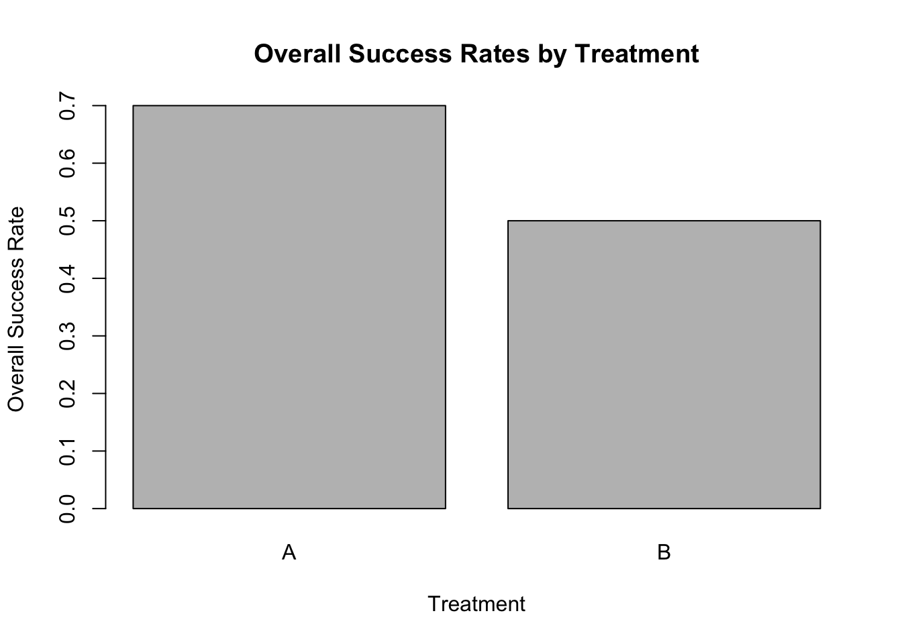
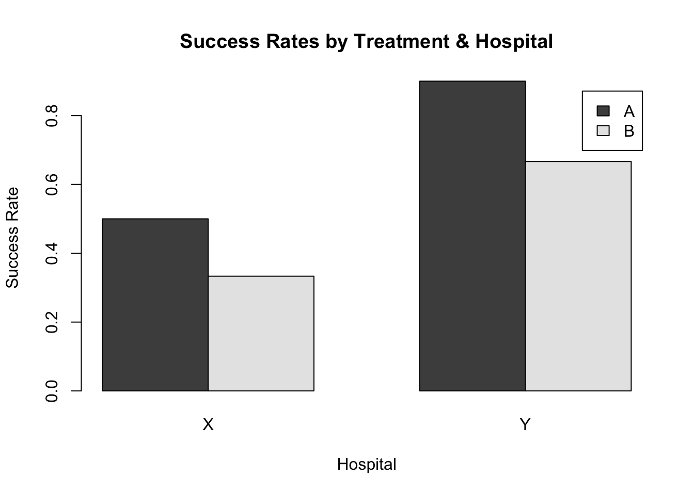
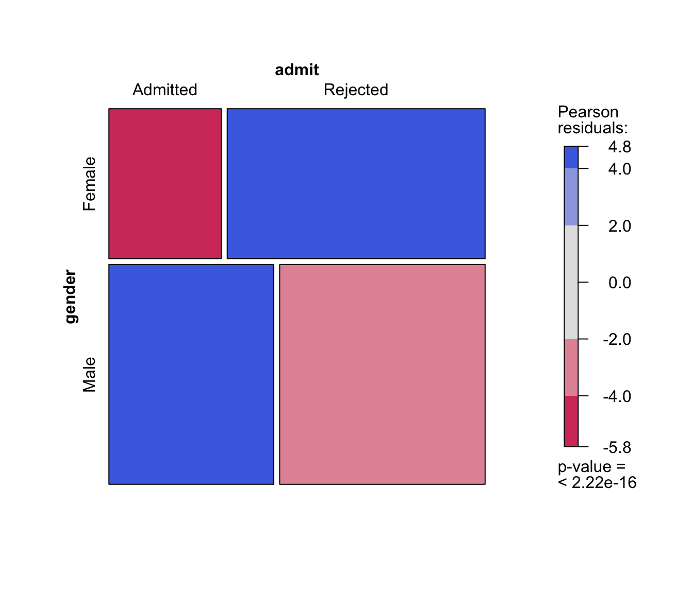
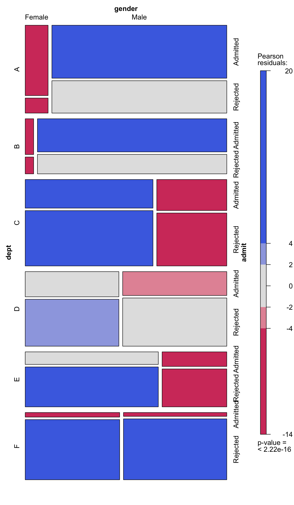

Hospital Treatment Patients Successes
1 X A 10 5
2 X B 90 30
3 Y A 10 9
4 Y B 90 60ST201 Data Analysis
Association between Categorical Variables (3)
Considering associations with > two categorical variables
How do we consider associations with categorical data?
- Visualisation
- Proportions and Relative Risk
- Odds and Odds Ratios
Example Scenario: Medical Treatment Success Rates
Let’s consider two treatments, Treatment A and Treatment B, and their successes. Assume we also have information on where the treatments are carried out, either Hospital X or Hospital Y.
Data
Turning this data into contingency tables
library(vcd)
hospital_data$Failures <-
hospital_data$Patients - hospital_data$Successes
treatment_tab <-
xtabs(cbind(Successes, Failures) ~ Treatment,
data = hospital_data)
hospital_tab <-
xtabs(cbind(Successes, Failures) ~ Hospital,
data = hospital_data)
treatment_tab;hospital_tab
Treatment Successes Failures
A 14 6
B 90 90
Hospital Successes Failures
X 35 65
Y 69 31Overall Success Rates (ignoring hospital)
Let’s first compare the overall success rates for both treatments, ignoring the hospital.
- Given the format of this data we might deal with it a little differently in R than we’ve seen before.
# Calculate the overall success rate for Treatment A and B
overall_data <- aggregate(cbind(Patients, Successes) ~ Treatment,
data = hospital_data,
FUN = sum)
overall_data$OverallSuccessRate <-
overall_data$Successes / overall_data$Patients
overall_data Treatment Patients Successes OverallSuccessRate
1 A 20 14 0.7
2 B 180 90 0.5- We can still visualise this, but the table is also sufficient.
barplot(overall_data$OverallSuccessRate,
names.arg = overall_data$Treatment,
main = "Overall Success Rates by Treatment" ,
ylab = "Overall Success Rate",
xlab = "Treatment")
. . .
Treatment A has a higher success rate than Treatment B.
Success Rates for Treatment by Hospital
Now, let’s break down the success rates based on whether treatment was performed at Hospital X or Y.
# Calculate the overall success rate for Treatment A and B
hospital_data$SuccessRate <-
hospital_data$Successes / hospital_data$Patients
hospital_data Hospital Treatment Patients Successes Failures SuccessRate
1 X A 10 5 5 0.5000000
2 X B 90 30 60 0.3333333
3 Y A 10 9 1 0.9000000
4 Y B 90 60 30 0.6666667- To visualise this with a barplot we need to manipulate the data a bit:
Hospital
Treatment X Y
A 0.5000000 0.9000000
B 0.3333333 0.6666667barplot(hospital_tab,
legend.text = TRUE,
beside = TRUE,
main = "Success Rates by Treatment & Hospital" ,
ylab = "Success Rate",
xlab = "Hospital")
. . .
Treatment A has a higher success rate than Treatment B in both hospitals.
Odds and Odds Ratio
🔍 What Are Odds?
When comparing two groups (e.g., Treatment vs. Control), the odds of success for each are calculated by:
Category 1:
\(w1 = \frac{\text{Success in Group 1}}{\text{Failure in Group 1}}\)Category 2:
\(w2 = \frac{\text{Success in Group 2}}{\text{Failure in Group 2}}\)
🔗 What is the Odds Ratio?
The odds ratio tells us how much more likely success odds are in one group compared to the other:
\(\text{Odds Ratio} = \frac{w1}{w2}\)
Example: Student Admissions at UC Berkeley
Aggregate data on applicants to graduate school at Berkeley for the six largest departments in 1973 classified by admission and sex.
The variables and their levels are as follows:
Admit: Admitted, Rejected
Gender: Male, Female
Dept: A, B, C, D, E, F
admission_dat# A tibble: 4,526 × 3
admit gender dept
<fct> <fct> <ord>
1 Admitted Male A
2 Admitted Male A
3 Admitted Male A
4 Admitted Male A
5 Admitted Male A
6 Admitted Male A
7 Admitted Male A
8 Admitted Male A
9 Admitted Male A
10 Admitted Male A
# ℹ 4,516 more rowsExample: Student Admissions at UC Berkeley
Let’s assume, upon an initial look at the data, that the tables are collapsed over department.
admit
gender Admitted Rejected
Female 557 1278
Male 1198 1493. . .
Odds
Admitted:Rejected|Female Admitted:Rejected|Male
0.4358372 0.8024113 2.5 % 97.5 %
Admitted:Rejected|Female 0.3945546 0.4814394
Admitted:Rejected|Male 0.7436704 0.8657919. . .
and Odds Ratios
Example: Student Admissions at UC Berkeley
Let us look at the same data but divided into groups by department.
admission_tab <- xtabs(~ gender + admit + dept,
data = admission_dat)
addmargins(admission_tab), , dept = A
admit
gender Admitted Rejected Sum
Female 89 19 108
Male 512 313 825
Sum 601 332 933
, , dept = B
admit
gender Admitted Rejected Sum
Female 17 8 25
Male 353 207 560
Sum 370 215 585
, , dept = C
admit
gender Admitted Rejected Sum
Female 202 391 593
Male 120 205 325
Sum 322 596 918
, , dept = D
admit
gender Admitted Rejected Sum
Female 131 244 375
Male 138 279 417
Sum 269 523 792
, , dept = E
admit
gender Admitted Rejected Sum
Female 94 299 393
Male 53 138 191
Sum 147 437 584
, , dept = F
admit
gender Admitted Rejected Sum
Female 24 317 341
Male 22 351 373
Sum 46 668 714
, , dept = Sum
admit
gender Admitted Rejected Sum
Female 557 1278 1835
Male 1198 1493 2691
Sum 1755 2771 4526Example: Student Admissions at UC Berkeley
Odds
admission_odds <- lodds(~ admit + gender + dept, data = admission_dat,
log = FALSE)
coef(admission_odds)Admitted:Rejected|Female:A Admitted:Rejected|Male:A
4.68421053 1.63578275
Admitted:Rejected|Female:B Admitted:Rejected|Male:B
2.12500000 1.70531401
Admitted:Rejected|Female:C Admitted:Rejected|Male:C
0.51662404 0.58536585
Admitted:Rejected|Female:D Admitted:Rejected|Male:D
0.53688525 0.49462366
Admitted:Rejected|Female:E Admitted:Rejected|Male:E
0.31438127 0.38405797
Admitted:Rejected|Female:F Admitted:Rejected|Male:F
0.07570978 0.06267806 2.5 % 97.5 %
Admitted:Rejected|Female:A 2.85443740 7.68691870
Admitted:Rejected|Male:A 1.42119020 1.88277768
Admitted:Rejected|Female:B 0.91708435 4.92389276
Admitted:Rejected|Male:B 1.43644040 2.02451551
Admitted:Rejected|Female:C 0.43593215 0.61225216
Admitted:Rejected|Male:C 0.46729337 0.73327208
Admitted:Rejected|Female:D 0.43419451 0.66386323
Admitted:Rejected|Male:D 0.40335753 0.60654021
Admitted:Rejected|Female:E 0.24934640 0.39637863
Admitted:Rejected|Male:E 0.27979716 0.52716949
Admitted:Rejected|Female:F 0.04999699 0.11464631
Admitted:Rejected|Male:F 0.04074158 0.09642579Example: Student Admissions at UC Berkeley
and Odds Ratios
admission_OR <- loddsratio(~ admit + gender + dept, data = admission_dat,
log = FALSE)
coef(admission_OR) A B C D E F
2.8635896 1.2461048 0.8825661 1.0854419 0.8185776 1.2079151 2.5 % 97.5 %
A 1.7111703 4.792127
B 0.5285366 2.937880
C 0.6656152 1.170230
D 0.8086284 1.457016
E 0.5528574 1.212011
F 0.6641723 2.196808What’s going on?
In this example, Simpson’s Paradox has occurred because
both gender identity and admissions were related to a third variable, namely, the department.
First, women were more likely to apply to social science departments, whereas men were more likely to apply to natural science departments.
Second, the acceptance rate in social science departments was less than that in natural science departments.
Because women were more likely than men to apply to programs with lower acceptance rates, when department was ignored (i.e., when the data were aggregated over dept), it seemed that women were less likely than men to be admitted to graduate school, whereas the reverse was actually true.
Lurking Variable
A lurking variable is a variable that is not included as an explanatory variable in the analysis but can affect the interpretation of relationships between variables.
A lurking variable can falsely identify a strong relationship between variables or it can hide the true relationship.
To discover lurking variables, you must take the time to understand your data and the important variables that can affect a process.
Ignoring an important lurking variable can lead to Simpson’s Paradox, especially when analyzing categorical data. This paradox occurs when the relationship between two variables reverses or changes after considering a third variable.
Visualisation: 2-way mosaic plots

mosaic(~ gender + admit,
data = admission_dat,
shade = TRUE,
legend = TRUE)Visualisation: 3-way mosaic plots

mosaic(~ dept + gender + admit ,
data = admission_dat,
shade = TRUE,
legend = TRUE)Example: Titanic Survival Data
This data set provides information on the fate of passengers on the fatal maiden voyage of the ocean liner ‘Titanic’, summarized according to economic status (class), sex, age and survival.
Example: Titanic Survival Data
xtabs(Freq ~ Sex + Survived , data = titanic_df ) Survived
Sex Yes No
Male 367 1364
Female 344 126xtabs(Freq ~ + Sex + Survived + Class, data = titanic_df ), , Class = 1st
Survived
Sex Yes No
Male 62 118
Female 141 4
, , Class = 2nd
Survived
Sex Yes No
Male 25 154
Female 93 13
, , Class = 3rd
Survived
Sex Yes No
Male 88 422
Female 90 106
, , Class = Crew
Survived
Sex Yes No
Male 192 670
Female 20 3